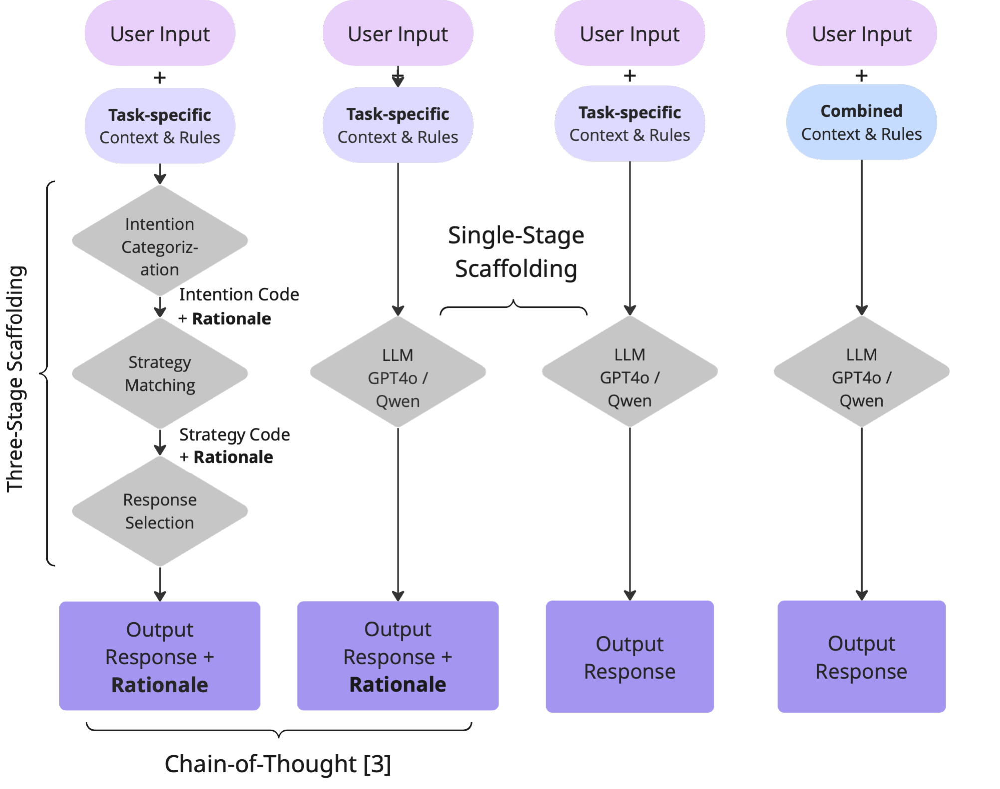
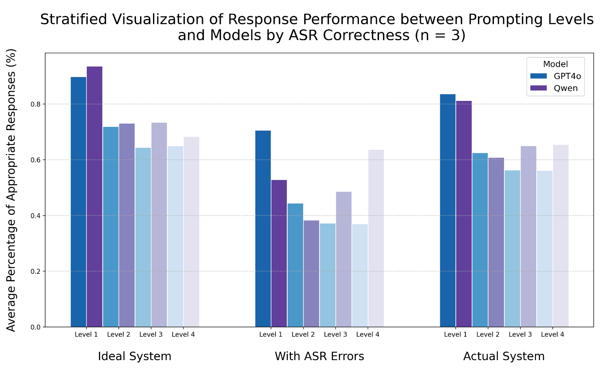

Automated cognitive tests
Some cognitive screening is a guided conversation. In the grocery shopping task, a person is walked through a short errand in four parts, and the way they answer is part of the signal. A conversational agent can run that script. Speech is transcribed first, then the model replies from the task rules and from where the figurine sits on the shop map. Whether the reply is appropriate depends on how the prompt is written, and on whether the recognizer got the words right.
Four prompts, from a script down to one instruction
The agent we started from already walks the task in three steps: decide what the person is trying to do, match a strategy for that step, then choose the reply. Jiaxiong Hu and colleagues had shown that this scaffolding helps. Hei Ching Iu and I took it apart, on GPT-4o and on Qwen, to see which piece was doing the work.
The fullest prompt keeps the three steps. Each step’s answer, and the reason for it, is handed to the next step. The next prompt folds those steps into one question and still asks for a reason. The third is that same question with the reason left out. The last prompt is only the situation and the rules: no staged script, and no request to think out loud.

Clean transcripts, and ones the recognizer mangled
Three dialogues were drawn at random from 32 user studies: 65, 57, and 43 turns, of which 15, 11, and 18 contained a speech-recognition mistake. Every turn went through all four prompts and both models. Each reply was marked appropriate or not by hand. The same turns were then scored three ways: only the clean ones, only the ones the recognizer mangled, and the mixture a deployed system would hear.
I ran the two middle prompts, the single question with and without a written reason, and labelled those replies. Hei Ching Iu ran the fullest prompt and the bare one, and labelled which turns the recognizer had mangled.

The fullest prompt leads the other three, especially on a clean transcript. Asking the model to write its reason leaves the rate about where the same single question sits without that request, and the bare instruction lands in that same lower band. Recognition errors pull every prompt down. Qwen holds up better than GPT-4o as the prompt gets thinner. About half the turns in each dialogue are navigation commands, and Qwen answers those in a steady way even when the words are off.
A thinner prompt can still sound reasonable on a noisy turn. Reading the replies, both models have a harder time changing tasks once the three-step script is gone, and a short prompt sometimes gives a nonsense answer to a simple request that the staged version handles steadily.